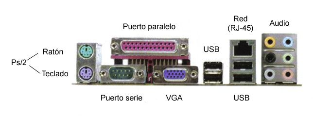
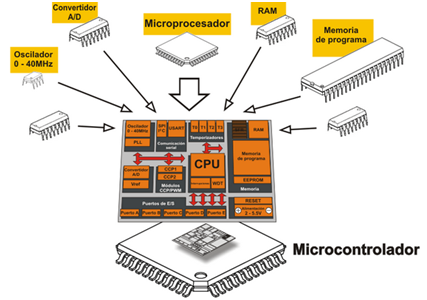
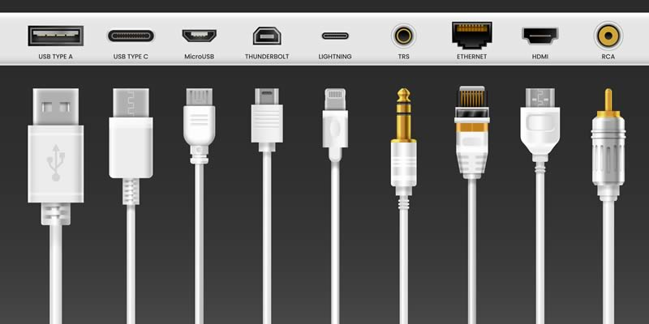

Definición de Puertos Paralelos y Seriales
Los puertos paralelos y seriales son interfaces esenciales en los microprocesadores para la comunicación con dispositivos externos.
- Puerto Paralelo: Permite la transmisión simultánea de múltiples bits, ideal para dispositivos como impresoras.
- Puerto Serial: Transmite datos bit a bit, siendo más eficiente para largas distancias.

Manejo de Puertos
El manejo de puertos incluye:
- Configuración inicial de los puertos.
- Control de flujo de datos.
- Supervisión de errores durante la transmisión.
Interrupciones para el Manejo de Puertos
Las interrupciones permiten al microprocesador responder a eventos externos de manera eficiente.
- Interrupciones en puertos paralelos: Utilizadas para manejar datos en dispositivos de alta velocidad.
- Interrupciones en puertos seriales: Ideales para gestionar datos en transmisiones continuas.

Lectura y Escritura en los Puertos
La lectura y escritura en los puertos se realiza mediante instrucciones específicas:
- Lectura: Permite recibir datos desde dispositivos conectados.
- Escritura: Envía datos hacia los dispositivos externos.
Programación de los Puertos
La programación de los puertos incluye:
- Configuración de registros de control.
- Definición de parámetros como velocidad y paridad.
- Uso de bibliotecas específicas para facilitar la implementación.

Prueba y Depuración de Errores
La prueba y depuración de errores es fundamental para garantizar el correcto funcionamiento de los puertos:
- Identificación de problemas de hardware.
- Resolución de conflictos en el software.
- Optimización del rendimiento mediante herramientas de monitoreo.
Casos de Uso
Los puertos paralelos y seriales se utilizan en:
- Conexión de impresoras y dispositivos de almacenamiento.
- Comunicación con sensores y actuadores en sistemas embebidos.
- Automatización industrial y control de maquinaria.
Perspectivas Futuras
Con el avance de la tecnología, se espera que los puertos:
- Soporten mayores velocidades de transmisión.
- Integren capacidades de inteligencia artificial para optimizar la comunicación.
- Mejoren la interacción entre dispositivos y microprocesadores.